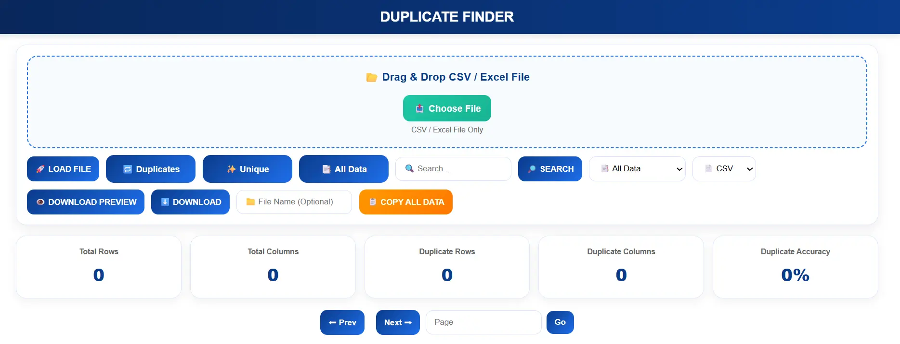
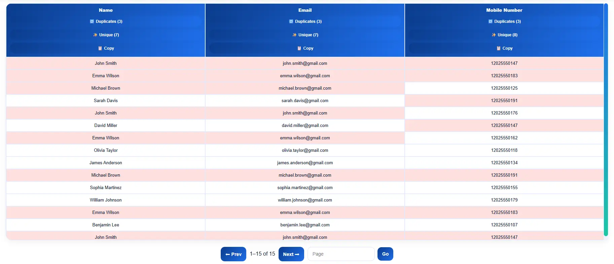
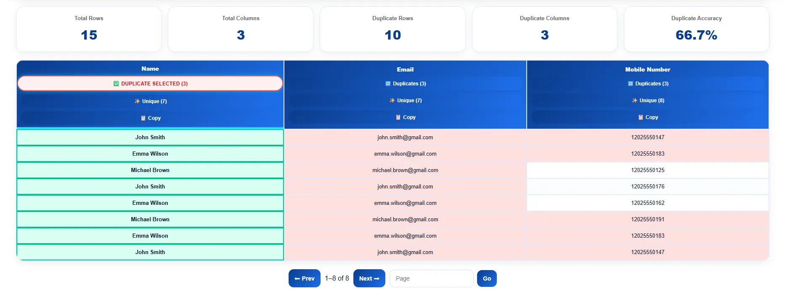

How to Remove Duplicates in Excel & CSV Files Online (Fast & Free)
Learn how to remove duplicates easily.
Try Duplicate Finder NowDuplicate records are one of the most common problems in Excel spreadsheets and CSV files. Whether you're managing customer databases, email lists, sales reports, inventory sheets, or lead-generation data, duplicate entries can create reporting errors, inaccurate analytics, and unnecessary confusion.
With Vicohi Duplicate Finder, you can quickly detect duplicate rows, identify unique records, filter datasets, search specific entries, and export clean Excel or CSV files within seconds.

Why Removing Duplicates Is Important
Duplicate data can negatively affect reporting accuracy and business decisions. Maintaining clean datasets improves productivity, enhances data quality, and prevents duplicate records from affecting analysis.
- Remove duplicate rows from Excel spreadsheets
- Delete duplicate records from CSV files
- Extract unique data instantly
- Improve reporting accuracy
- Maintain clean customer databases
- Reduce data management errors
What Is Vicohi Duplicate Finder?
Vicohi Duplicate Finder is an online spreadsheet-cleaning tool designed to help users identify duplicate rows and unique records from Excel and CSV files quickly and accurately.
Instead of manually sorting large datasets, the tool automatically scans uploaded files and organizes records into useful categories.
- All Data Records
- Duplicate Records
- Unique Records

How to Remove Duplicates Using Vicohi Duplicate Finder
Step 1: Upload Your Excel or CSV File
Upload your spreadsheet directly into the tool. Supported file formats include CSV and Excel XLSX files.
- CSV Files
- Excel XLSX Files
- Large Spreadsheet Datasets
Step 2: Analyze the Data
After uploading, the system automatically scans the entire dataset and identifies duplicate rows.
Step 3: Filter Results
Use the built-in filter options to display specific types of records.
- Duplicates – View duplicate rows only.
- Unique Records – View unique data only.
- All Data – View the complete dataset.
Step 4: Search Specific Records
Use the search feature to instantly locate records inside large datasets without manually scrolling through thousands of rows.

Step 5: Download Clean Data
After reviewing the results, download the filtered dataset instantly.
- Download All Data
- Download Duplicate Records
- Download Unique Records
Export options are available in both CSV and Excel formats.
You can try our tool here: Use Duplicate Finder Tool to automatically detect duplicates.
Advanced Duplicate Detection Features
Row-Level Duplicate Detection
Identify duplicate rows by comparing complete records across the uploaded spreadsheet.
Unique Data Extraction
Extract only unique records from large datasets with a single click.
Fast Search and Filtering
Search through thousands of records instantly and find the exact information you need.
Large File Support
The tool is optimized for processing large Excel and CSV files efficiently.
If you are working with Excel data, you can also read: this guide on matching data .
Benefits of Using Vicohi Duplicate Finder
- Fast Duplicate Detection
- Excel and CSV File Support
- No Manual Sorting Required
- Instant Data Filtering
- Download Filtered Results
- Accurate Duplicate Analysis
- Large Dataset Compatibility
- Simple and User-Friendly Interface
Who Can Use This Tool?
- Data Analysts
- Digital Marketers
- Lead Generation Specialists
- Sales Teams
- E-commerce Businesses
- Researchers
- Students
- Database Administrators
Frequently Asked Questions
Can I remove duplicates from CSV files?
Yes. Vicohi Duplicate Finder supports CSV files and can instantly separate duplicate and unique records.
Can I remove duplicates from Excel spreadsheets?
Yes. Upload XLSX files and identify duplicate rows within seconds.
Can I download only duplicate records?
Yes. You can export duplicate rows, unique rows, or the complete dataset.
Does the tool support large files?
Yes. The system is optimized for handling large spreadsheet datasets efficiently.
Is Vicohi Duplicate Finder free to use?
Yes. Users can upload files, analyze data, filter records, and export results quickly and easily.
Ready to Remove Duplicate Data?
Clean your Excel or CSV files instantly using our tool.
🚀 Use Duplicate Finder Tool